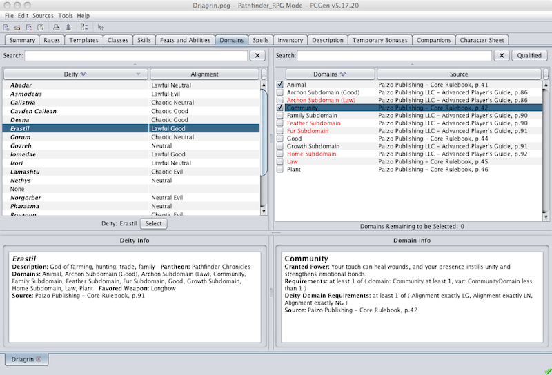

The Domains tab is where you select a Deity for your character. PC's that have domains as a Class feature, Clerics as an example, will select their domains on this tab.

The upper-left pane contains the list of available deities. Clicking on one that the PC is qualified for and then clicking on the Select button to select it. Once a deity is chosen the upper-right pane will be populated with the domains available from the selected deity. The number of domains the user can choose and the number of domains they have chosen will be indicated.
When clicking on a deity the details about it will be displayed in the lower-left window. Likewise, clicking on a domain will cause its details to be displayed in the lower-right window.